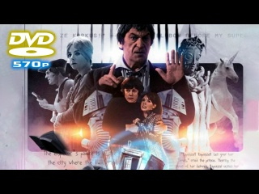
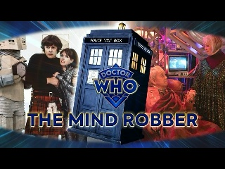
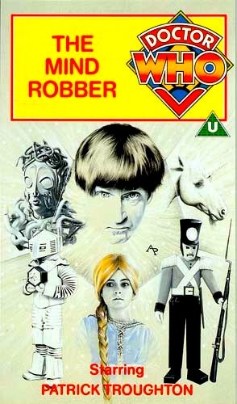
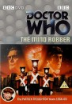
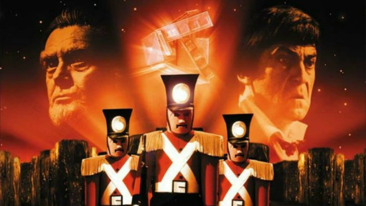
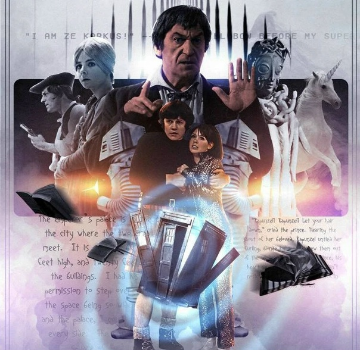

Субтитры: Русские и Английские |  |
|---|---|
Субтитры: Русские {Jaskier} и Английские |  |
| Все эпизоды сохранились - 16mm t/r * 5-й эпизод так же имеется на - 35 mm t/r |
|---|
| |
«Вор разумов» — Доктор, Джейми и Зои попадают в странную реальность, где оживают вымышленные персонажи: от Гулливера до Минотавра. Им предстоит бросить вызов таинственному Мозгу, который питается творчеством, и вырваться из ловушки между фантазией и реальностью. Тон серии — сюрреалистичный и тревожный, будто сама грань между вымыслом и правдой вот‑вот исчезнет.
 VHS - май 1990 |  DVD - 7 марта 2005 * Версия в нашей группе |
|---|
 В 2023 году вышел сериал, где спутники доктора вспоминают свои приключения в консольной комнате "ТАРДИС воспоминаний". По сути идет полный повтор старых серий со вставками постаревших актеров в начале и в конце. В 2023 году вышел сериал, где спутники доктора вспоминают свои приключения в консольной комнате "ТАРДИС воспоминаний". По сути идет полный повтор старых серий со вставками постаревших актеров в начале и в конце.В "Историях ТАРДИС" эта серия является ВТОРОЙ! |

